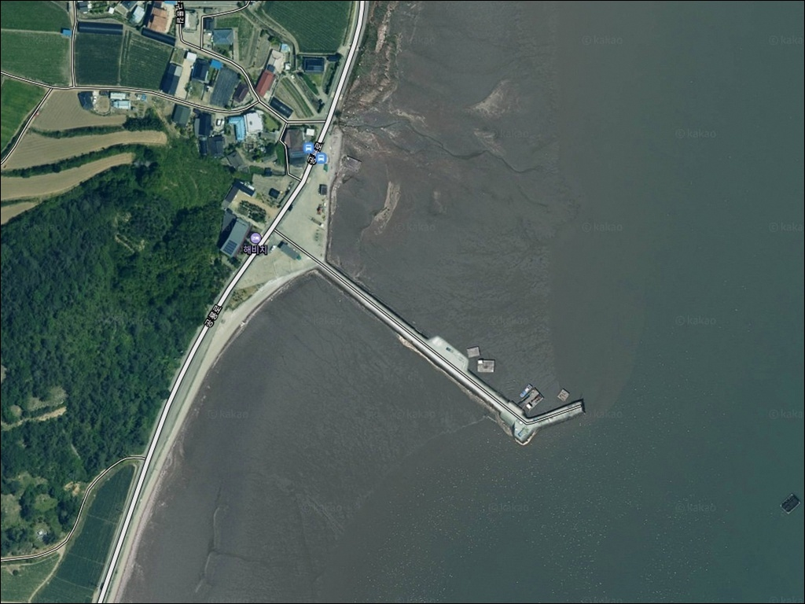
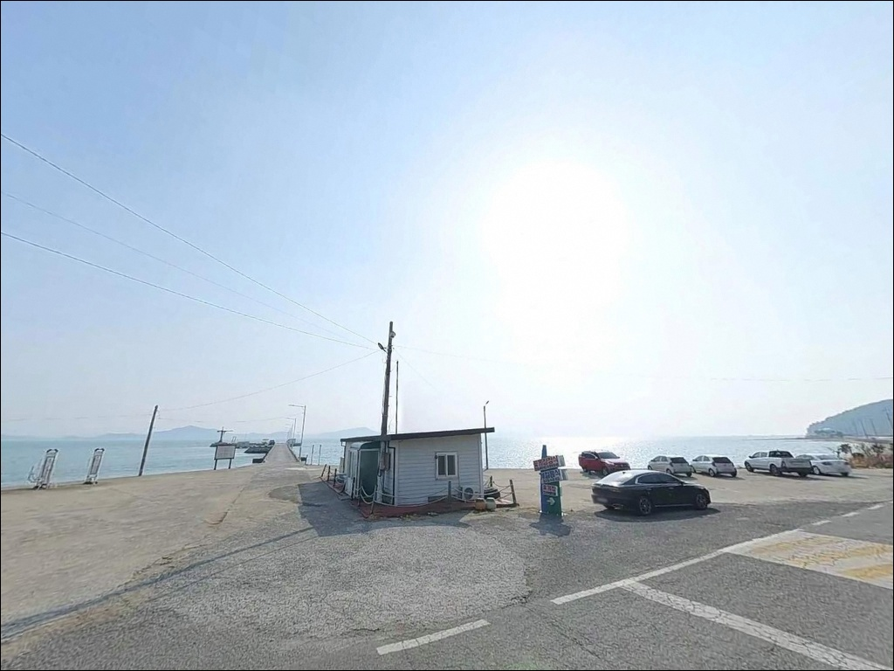
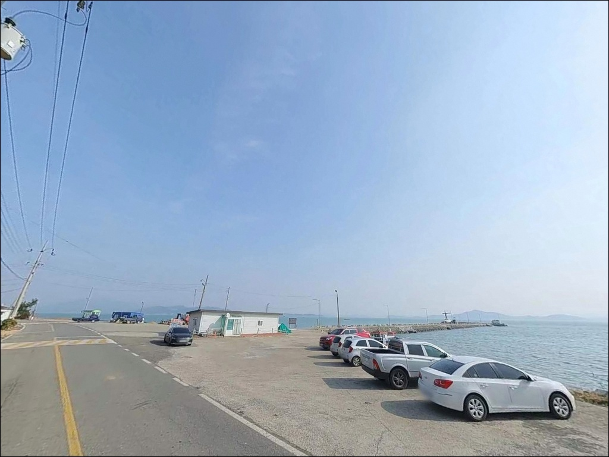
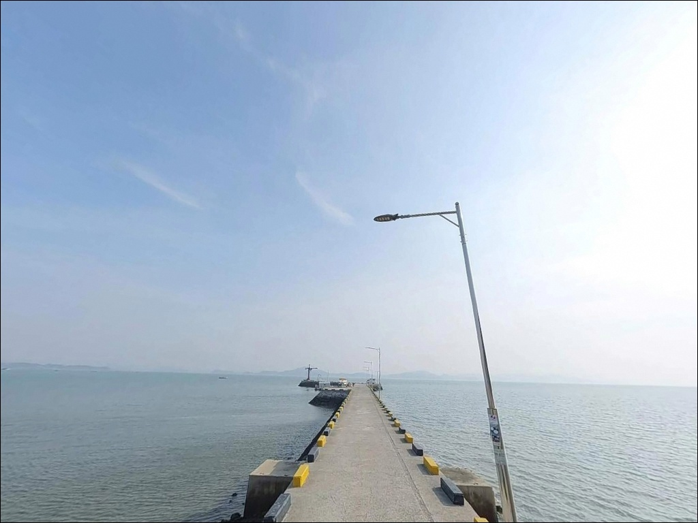
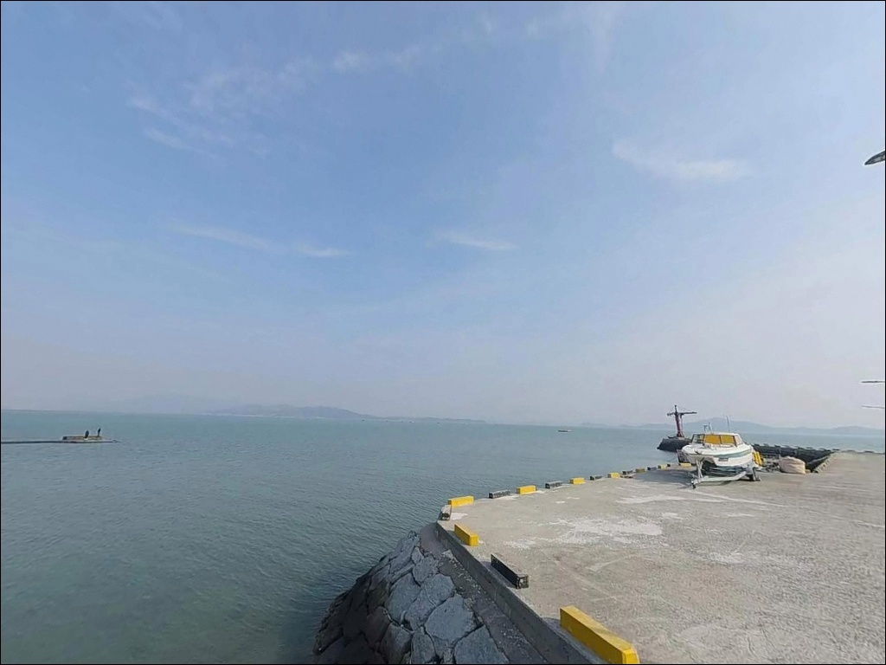
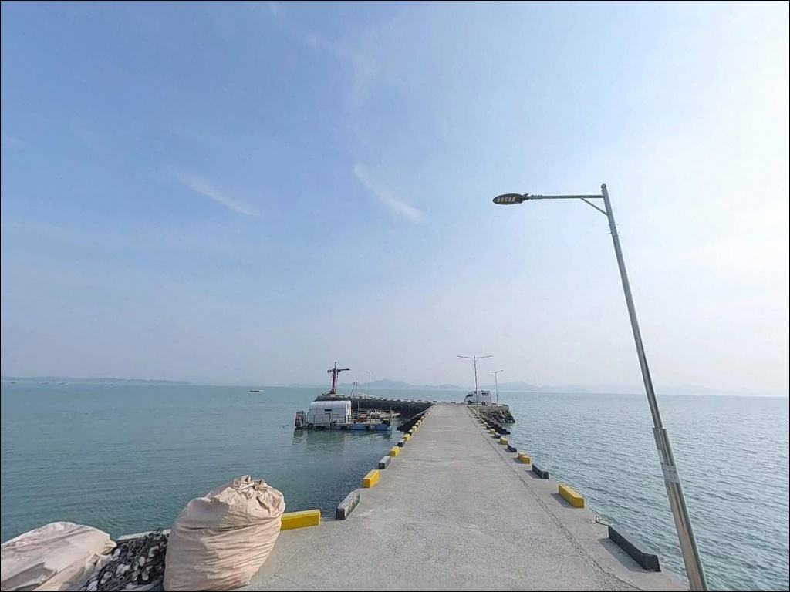
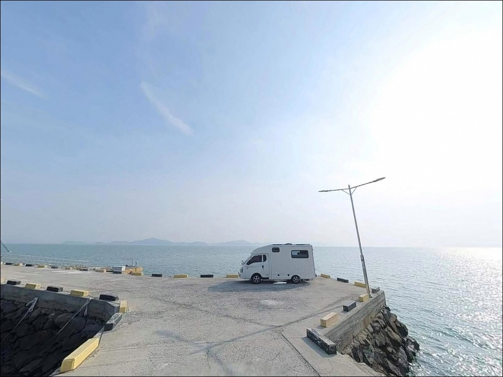
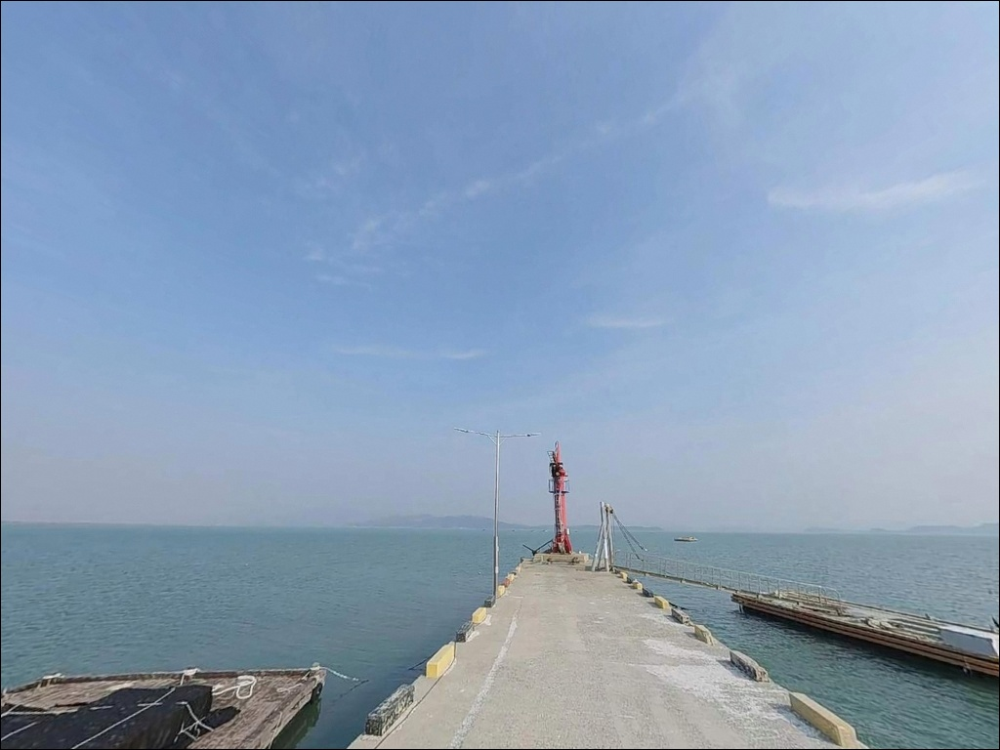
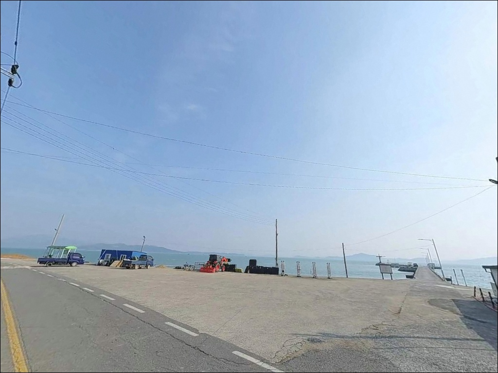

이 페이지에는 광고(제휴 링크 포함)가 있으며, 광고 링크를 통해 구매하면 운영자가 판매 수익 또는 수수료를 받을 수 있습니다. 포인트 사진: 카카오맵 스카이뷰·로드뷰. 이 페이지의 지도·사진 이미지는 카카오맵의 실제 서비스 이미지와 다를 수 있습니다.

해평항
전남 보성군 득량면 해평리 53
득량만 안쪽 어항이라고 해서
아무 때나 가도 낚시가 된다고 판단하면
간조 시 갯벌이 드러난 풍경만 보고 돌아오게 됩니다.
수심 0.3~1.4m의 펄 저질 지형은
들물이 들어와야 비로소 낚시 자리가 살아나는 구조입니다.
전남 보성군 득량면 해평리에 자리한 해평항은
득량만방조제와 고흥방조제 사이
내만 깊숙이 위치한 소규모 정주어항입니다.
선착장 242m, 물양장 156m 규모로
원투낚시와 릴찌낚시 중심의 연안 낚시에
지형 조건이 잘 맞는 곳입니다.
이 글은
해평항의 진입 환경, 차박 여건,
물때 기반 낚시 조건, 낚시 스타일별 공략법에 집중합니다.
특정 어종 보장이나 조황 단정은
이 글의 범위에 포함되지 않습니다.

해평항으로 향하는 진입로는
공룡로를 통해 해평리 마을 안쪽으로 이어지는 구조입니다.
급경사 구간 없이 완만하게 이어지며,
승용차부터 중형 SUV, 캠핑카까지
진입과 회차가 원활한 수준입니다.
선착장 앞 평지와 방파제 인접 공터 2곳에
차량 5~7대 이상 수용이 가능한 주차 공간이 확보되어 있습니다.
단, 어선 출입이 활발한 이른 아침 시간대에는
공터 가장자리를 이용하는 것이
어업 작업 동선과 겹치지 않는 기본 매너입니다.
항 주변 도로는 마을과 항만 시설이
거의 한 덩어리로 붙어 있는 구조라
주차 후 낚시 자리까지 이동 거리는 짧습니다.
진입 난이도는 낮은 편이나
왕복 1차선 구간이 포함된 구간에서
맞은편 차량을 만날 경우에 대비해
서행이 기본입니다.

해평리는 민가 밀집도가 낮은 소규모 어촌 마을로,
야간 통행량이 거의 없어
차박 프라이버시는 상대적으로 양호한 편입니다.
다만 항 내 가로등이 최소 수준으로 설치되어 있어
외항 방파제 끝단 방향은 조명 영향이 약합니다.
야간 낚시와 차박 모두 헤드랜턴은 필수입니다.
득량만 내만 구조상 외해 직접 노출이 제한되어
너울성 파도 영향은 크지 않습니다.
다만 득량만은 창조류·낙조류가
최대 1.8노트 안팎까지 빨라지는 해역으로,
조류가 형성되는 시간대에는
방파제 끝단 주변에서 강풍 주의가 필요합니다.
낚시 후 하룻밤 머무는 용도로는
주차 공간 확보와 소음 관리만 지킨다면
충분히 조용한 야간 환경입니다.
취사 여부나 야영 허용 범위는
관할 기관인 보성군수 소관 사항이므로
출발 전 확인하는 것이 안전합니다.

해평항 반경 1km 이내에는
편의점이나 마트를 기대하기 어렵습니다.
소규모 어촌 마을 특성상
완전 자급 체제로 진입하는 것이
현실적인 준비 방식입니다.
식수, 얼음, 낚시 소품, 연료 모두
출발 전에 갖춰야 합니다.
반경 3km권에는
득량만바다낚시공원(선소항)이 위치해 있습니다.
화장실과 주차장 인프라가 갖춰진 유료 낚시 시설로,
해평항 체류 중 부족한 소품이 생겼을 때
가장 가까운 기본 인프라 활용 동선입니다.
반경 10km권으로 이동하면
율포해수욕장 인근(회천면 율포리)에
주유소, 편의점, 식당이 집중되어 있습니다.
율포해수녹차탕도 이 방향에 있어
낚시 후 온수 시설 이용까지
한 동선에서 해결 가능합니다.

해평항 방문 전에 가장 먼저 확인할 것은
물때입니다.
득량만 내만 갯벌 지형은
간조 시 바닥이 넓게 드러나
낚시 공간 자체가 사라집니다.
들물 시작 후 2~3시간, 특히 5물~8물 사이가
이 포인트 낚시의 핵심 타이밍입니다.
내만 펄 지형은 간조 시 갯벌 진입 후
역조류에 고립될 위험이 있습니다.
물때 확인 없이 갯벌로 내려가지 않는 것이
이 포인트에서 지켜야 할 첫 번째 안전 원칙입니다.
방파제 끝단은 비나 이슬에 젖으면
미끄럼이 심해지므로 방수 미끄럼 방지화를
준비하는 것이 좋습니다.
득량만은 조류가 빠른 해역입니다.
기상청 해상 예보를 출발 당일 아침에
한 번 더 확인하고, 강풍 예보가 있는 날은
방파제 끝단 진입을 자제합니다.
야간 낚시 시 헤드랜턴과 예비 배터리,
구명조끼는 항상 착용 상태를 유지합니다.

릴찌낚시란 전동릴이나 스피닝릴에 찌를 달아
조류 흐름을 타며 대상어를 공략하는 방식입니다.
해평항의 낚시 여건을 이해하려면
지형 구조부터 파악해야 합니다.
득량만방조제와 고흥방조제 사이에 끼인 내만 지형으로,
창조류 1.8노트, 낙조류 1.6노트의
빠른 조류가 수로와 방조제 방향으로 집중됩니다.
방파제 끝단과 수로가 형성된 경계 구간에서
수심이 상대적으로 깊게 유지됩니다.
이 지점은 들물이 들어오기 시작하면
어류 이동 경로가 되는 구간으로,
선착장 끝단 전방이 원투낚시의 주요 공략 자리입니다.
내항은 수면이 잔잔해 민장대 낚시나
초보자 운용에도 부담이 없습니다.
이 포인트에서 기대해볼 수 있는 어종은
감성돔, 농어, 숭어, 학꽁치, 붕장어, 도다리 계열입니다.
수온 변화에 따라 계절별 어종 접근 패턴이 달라지므로,
출조 전에 해평항 또는 득량만 방파제 조황을
포털에서 반드시 검색해 보시기 바랍니다.

이 포인트에서 가장 잘 맞는 낚시는 원투낚시입니다.
내만 갯벌 지형에서 들물이 차오를 때
방파제 외항 방향으로 장거리 캐스팅 후
바닥층을 천천히 탐색하는 방식입니다.
갯지렁이 계열 미끼가 이 지형에서 효과적이며,
붕장어와 도다리를 우선 기대해볼 수 있습니다.
릴찌낚시는 항 입구와 방파제 끝단에서
조류 흐름을 타는 채비 운용이 효과적입니다.
내항보다 외항 측이 조류 흐름이 살아 있어
찌 흘림 낚시의 완성도가 높아지는 편입니다.
크릴·깐새우를 활용한 채비로
감성돔과 숭어, 학꽁치를 기대해볼 수 있습니다.
루어낚시는 농어를 대상으로
득량만방조제 수로 부근에서 운용하는 방식이 어울립니다.
미노우 플러그나 지그헤드웜을 활용한
캐스팅 낚시로,
조류가 흐르는 타이밍에
수로 방향을 집중 공략하는 것이 핵심입니다.
민장대낚시는 내항의 잔잔한 수면 조건을 이용해
진입 난이도가 낮고 초보자도 운용이 편한 스타일입니다.

해평항 물때가 맞지 않거나
주차 공간이 여의치 않을 경우,
득량만방조제가 첫 번째 대안입니다.
해평항에서 불과 1.6km 거리에 위치하며,
고흥 대서면 남정리와 보성 득량면 해평리를
잇는 4.5km 규모의 방조제입니다.
조류가 집중되는 방조제 끝단은
원투·루어·찌낚시 모두 대응이 가능합니다.
선소항 방향으로 이동하면(약 7km)
득량만바다낚시공원이 위치합니다.
같은 득량만 해역 조건을 공유하면서
화장실과 주차 인프라가 정비된 곳으로,
편의시설이 필요할 때
해평항과 병행 탐색하기 좋은 동선입니다.
율포방파제(약 12km)는 보성군 내
대표 방파제 포인트로
주차 공간과 인근 편의시설 접근성이 뛰어납니다.
기상이 악화되거나 해평항 여건이 맞지 않을 때
대피·대체 포인트로 활용하기 좋은 곳입니다.

원투낚시나 릴찌낚시를 즐기는 낚시인이라면
해평항의 내만 갯벌 지형은
들물 타이밍을 잘 활용하면
충분히 조과를 기대해볼 수 있는 구조입니다.
조류가 잘 흐르는 방파제 끝단과
수로 경계 구간을 중심으로
물때에 맞춰 입장하는 것이 가장 중요한 준비입니다.
반면 간조 시에 도착하거나
물때 확인 없이 진입하면
낚시 자리가 없는 갯벌만 보고 돌아오는 상황이
이 포인트에서 가장 흔한 헛걸음 패턴입니다.
5물~8물 구간의 들물 타이밍,
자급 준비, 야간 조명 확보,
이 세 가지를 갖추고 가면
소박하지만 조용한 출조가 되는 곳입니다.
완전 자급 체제로 준비하고
어촌 마을 야간 소음에 주의한다면,
낚시와 차박을 한번에 즐길 수 있는
득량만의 조용한 내만 포인트입니다.